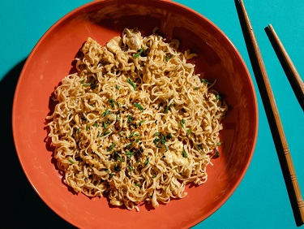

TikTok Ramen

Description
Everything bagel seasoning is a seemingly odd addition, but it weirdly ties the whole dish together perfectly. But, you could use sesame seeds instead.
Ingredients
- 1 package instant ramen noodles
- 1 teaspoon unsalted butter
- 1 clove garlic, minced
- 1/4 teaspoon red chilli flakes
- 1 teaspoon brown sugar
- Green onions, thinly sliced
Steps
- Cook ramen in boiling water to al dente following package directions. Drain and reserve ¼ cup of the water.
- Melt butter in a skillet over medium heat. Add garlic and cook, stirring constantly, until golden and fragrant, about 1 minute. Stir in chili flakes, brown sugar, and soy sauce and simmer for 1 minute. Add noodles and a bit of ramen cooking water and toss to combine.
- Push noodles to the side and crack egg into the skillet. Cook, stirring gently, until nearly set, then toss with the pasta and any additional water, if desired, to thin sauce.
- Transfer to a bowl and garnish with everything bagel seasoning and green onions, if using.